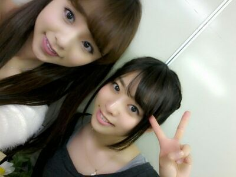
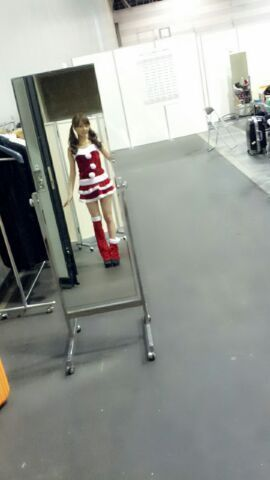
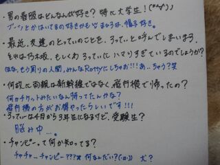

Hello☆ Rottyだお〜(*^^*)
ガールズアワードの楽屋で
ねね♪とだぉん。

今日は 些細な嬉しかった話しを
すんねん (/*・∨・*)/
この前 大阪に帰った時の話し
なんだけどねえ、
電車に乗るから切符買わなきゃ!
と思って 線路図と値段の表示
見てたんよお、
そしたら女の人が
スタスタスっと駆け寄ってきて
「 もう使わないんで
これよかったらどーぞ。」
だけ言って
「ありがとうございます !」
って言い返す間も無く
スタスタス。 ってその人
行っちゃって
見たら、
今日と明日 ２日間使える
1000円ぶんの切符やったの(´∨`)
『あの人 めっちゃ親切な人やん.』
と思いながら
その人の背中が見えなくなるまで
見ていました ( > ∨・)☆
感謝、感謝、感謝.
本当に嬉しかった(〃∨〃)
ってな感じで☆...
足下に注目 笑

(クリスマスの個握)
実はブカブカで握手始まる
直前に 両面テープ膝上に
はって落ちないように
してました =´▽`=/
ぴょん !
まひろはさっきお風呂上がったよぉ〜〜(*^^*)
皆はもう お風呂すませたかなん??
以上っ ))) ろってぃ−でしたん♪

やっと 貼り終えたぁ〜ん )))
のし.